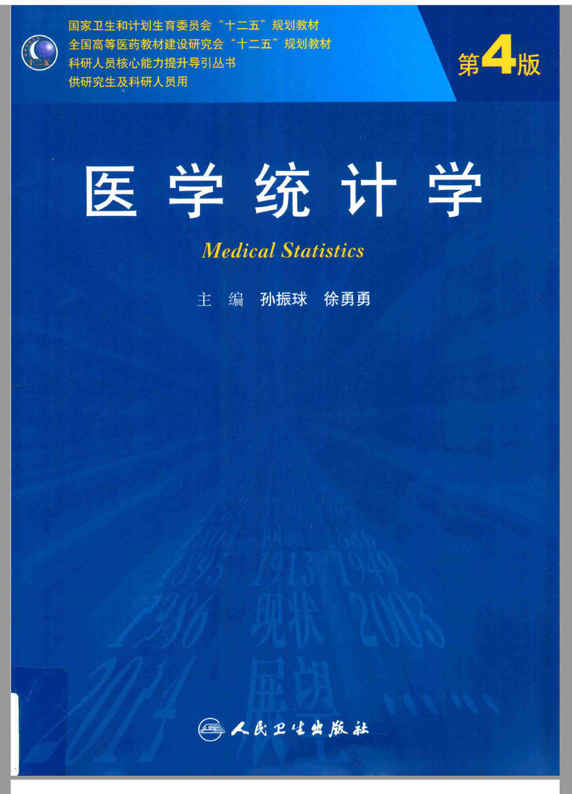

R语言实战医学统计
前言
本书缘起
R语言是一门编程语言，但同时也是一个统计软件，R语言是由统计学家开发的，所以天生就适合做统计。
很多刚接触R语言的朋友不知道如何入手，只知道目前R语言在临床医学领域很火爆，做统计分析、画图、做生信分析、孟德尔随机化、数据库挖掘等都离不开R语言。
万事开头难，我非常理解新手面对R语言的痛苦，因为我也是从0开始的，作为从未接触过编程的医学生/医生来说，初学R语言简直就是读天书！我最开始接触R语言是因为偶然间听师兄师姐说R语言可以做统计学，当时的我对SPSS的使用不熟练，觉得SPSS的使用步骤太多，难以记住，于是入了R语言的坑…没想到从此一发不可收拾，打开了新世界的大门。
这个系列也是我最开始学习R语言时的笔记，在我的公众号：医学和生信笔记，都可以找到，现在对原内容进行重新整理，并把数据一起打包，方便有需要的同学学习。
本书不适合R语言零基础的人。 如果你是刚入门的小白，我首先推荐你了解下R语言的基础知识，比如R语言和R包安装、Rstudio的界面、R语言中数据类型（向量、矩阵、数据框、列表等）、R语言中的数据导入导出、R语言的基础数据操作等。
我结合自己学习R语言时的经验，也专门为编程零基础的医学生/医生等群体录制了R语言零基础入门的视频教程，已放在B站，且配套文档、数据都是免费的，无任何套路。各种在初学R时遇到的“坑”，我都替你踩过了，并且也在视频中指出来了。强烈建议没接触过R语言的朋友先去了解下基础知识，切勿直接上手实操！
然后你就可以跟着本系列一起学习R语言在医学统计学中的使用。这个系列非常适合初学者，因为有很多内容是按照课本来的，尤其是基础统计分析部分，完全使用R语言复现课本中的例题，得到结果后可以与课本对照！我使用的课本是孙振球主编的《医学统计学》第4版以及第5版，封面如下：

由于R和SPSS在进行统计分析时的一些数学计算方面并不是完全一致，所以导致有些结果和课本中的结果有些出入，但是并不影响结果的正确性。
本系列还有配套的视频教程，也在B站，免费观看，点击直达：R语言实战医学统计
限于本人水平等问题，难免会有一些错误，欢迎大家以各种方式批评指正，比如公众号留言、粉丝QQ群、github、个人微信等。
本书会不定期更新，内容和格式都会不断完善。
更新日志：
- 20251128：增加新内容：广义估计方程；增加大量对专有名词和结果的解释说明；增加大量题干内容；修改github中网友提出的错误；优化章节结构和其他小细节修改；
- 20250902：增加新内容：多变量数据的统计分析、对数线性模型、泊松回归和负二项回归、验证性因子分析、结构方程模型、多水平模型、主成分回归；其他细节小修改；
- 20241018：本次更新是一次大更新！
- 首先是细节修改，错别字改正，并修正一些错误内容，主要涉及以下章节：t检验、方差分析（所有方差分析内容皆有改动）、卡方检验、秩和检验、双变量回归与相关等；
- 新增“三线表和统计绘图”一章，对应课本第十章：统计图和统计表；
- 精简一些和医学统计关联性较小的内容，把这部分内容放在参考链接中；
- 合并一些章节的内容，比如ROC曲线和三线表等；
- 重新安排章节顺序，和课本中的顺序更加对应；
- 增加配套的视频教程（b站：阿越就是我：R语言实战医学统计）！
- 20231230：全部内容从Rmarkdown改为quarto；增加三线表内容
- 20230905：
- 格式升级，改为3列式；
- RCS增加推荐阅读；
- t检验增加正态性检验和方差齐性检验；
- tidy风格医学统计增加秩和检验和计数资料统计分析；
- 增加亚组分析和森林图绘制；
- 20230612：改正样条回归中的一个笔误（age的Nonlinear的P<0.05……）
- 20230407：首次上传